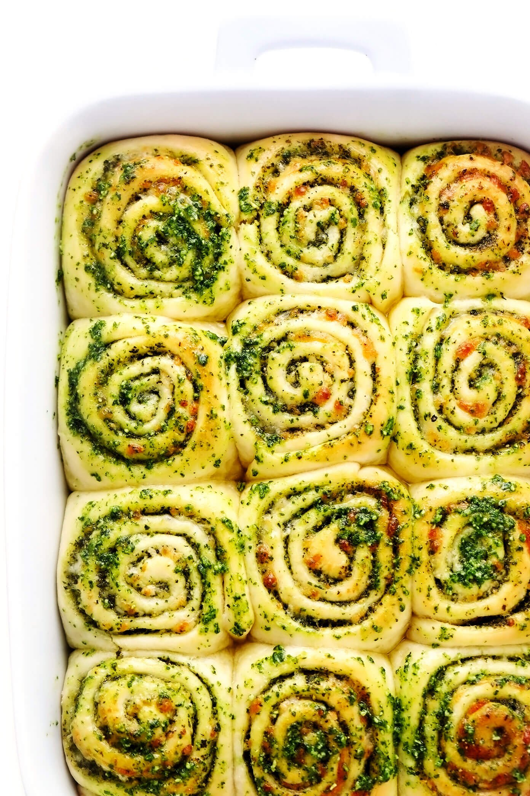

Cheesy Pesto Rolls

These cheesy pesto rolls are swirled with fresh basil pesto, mozzarella and Parmesan cheese and easy to make in about 1 hour!
Cooking time: 60 mins
Yields: 12 Servings
Source: Gimme Some Oven
Ingredients
DOUGH INGREDIENTS:
- 1 cup milk
- 1/4 cup salted butter
- 2 tablespoons honey (or granulated sugar)
- 1 envelope (2 1/4 teaspoons) instant (“rapid rise”) yeast
- 3 1/2 cups all-purpose flour
- 2 eggs
- 1 teaspoon fine sea salt
PESTO FILLING INGREDIENTS:
- 3/4 cup (6 ounces) basil pesto, plus extra for brushing on top
- 2 cups (8 ounces) shredded mozzarella cheese
- 1/2 cup freshly-grated Parmesan cheese
- fine sea salt and freshly-cracked black pepper
Steps
- Heat the milk mixture. Combine milk, butter and honey in small saucepan. Heat over medium heat stirring frequently until the butter is melted and the mixture is 110°F. (It should feel warm but not hot to the touch — I recommend measuring the temperature with a cooking thermometer.) If the mixture is too hot, just wait a few minutes for it to cool.
- Mix the dough. In the bowl of a stand mixer fitted with the dough-hook attachment (or see notes below for how to knead the dough by hand), add the warm milk mixture. Sprinkle the yeast on top, then give the mixture a brief stir. Add 3 1/2 cups of flour, eggs and salt, and beat on medium-low speed until combined. If the dough is sticking to the sides of the bowl, add more flour (up to an additional 1/2 cup), until the dough begins to form a ball and pulls away from the sides of the bowl. (Use no more than 4 cups of flour total.) Continue beating for 5 minutes on low speed. Remove dough and form it into a ball with your hands. Place it in a greased bowl and cover with a damp towel. Let rest for 10 minutes.
- Roll the dough (1st stage). Once the dough is ready, turn it out onto a floured work surface. Use a floured rolling pin to roll the dough out into a large rectangle, about 12 x 18 inches in size. Spread the pesto evenly over the top of the dough, leaving a 1-inch border on the left side (as shown in the photos above). Sprinkle the mozzarella and Parmesan evenly over the pesto, followed by a few extra twists of freshly-cracked black pepper and a pinch of sea salt.
- Roll out the dough (2nd stage). Beginning at the 18-inch edge, tightly roll up the dough and give the final seam a little pinch so that it seals. Use a piece of dental floss or a knife to slice off the top and bottom ends of the roll (just 1/2-inch or so on each end, which you can discard) so that the ends are even. Cut the remaining dough into 12 equal rounds.
- Let the dough rise. Place the rolls into a lightly-greased 9 x 13-inch baking dish. Cover the dish with a damp towel, and leave it in a warm place to rise for 25 minutes. Heat the oven to 350°F.
- Bake. Once the rolls have risen, uncover the dish and place it on the center rack of the oven. Bake for 15-20 minutes, or until the rolls are very lightly golden on top and cooked through. Transfer the baking dish to a wire rack. Lightly brush the tops of the rolls with some extra pesto.
- Serve. Then serve the rolls while they’re nice and warm…and enjoy!